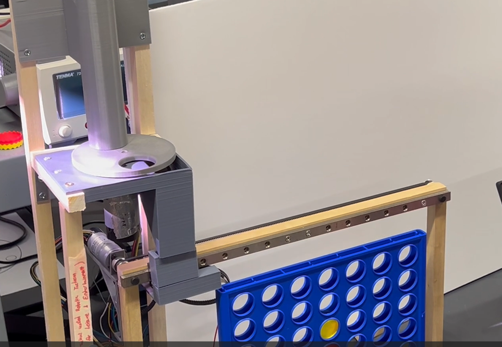

About Me
I grew up in the suburbs of Chicago. After high school graduation, my family and I relocated to South Carolina, this prompted my decision to attend Clemson University. Currently pursuing a Bachelor of Science with a major in Electrical Engineering, I am deeply passionate about the design and engineering processes that shape our everyday technology.
Work Experience
Atlas Copco (Engineering Intern)
- I completed an internship with Atlas Copco's Product Company as an Electrical Engineering Intern. During this internship, I worked with the electrical engineering team and collaborated with a couple of other individuals on challenging projects that required me to think like an engineer in my approach.
-I was responsible for reviewing and improving harness designs for road light harnesses using AutoCAD software. The goal was to make it easier for suppliers to understand the construction requirements and create a standardized drawing process for future road light harnesses. I also played a role in organizing the broken unit supply data by developing a process for proper data input, search, and editing to enhance usability. To achieve this, I created VBA macros and user forms windows to streamline the experience and make it more intuitive.
EPS FloTek, LLC (Engineering Intern)
-Worked in an intern position learning basic computational and fluid dynamics, working with programs such as Moldex3D, Rhinoceros, and Solid Works to help solve issues such as heating, warping, cracking, etc. in different plastic molds.
-Used these programs to develop molding simulations and prepared final reports. I have gone to trade shows where I talked to potential customers and advertised this program and our engineering services
Clemson University
-I am currently working on a Bachelor of Science in high level programming and circuit design classes, majoring in Electrical Engineering, graduating in the spring of 2024.
-Relevant Courses: Circuits 1 & 2, Electronics 1 & 2, Random Signal Analysis, Electromagnetics, Linear Control Systems, Systems Programming, Power Systems, and Silocion Photonic Integrated Circuits
Senior Design I
For this project a group of ECE students and myself were assigned to work together in creating an automatic connect 4 board using an arduino and some motors. This project taught me alot of things including; Working with electrical components, simulink control systems, power conversion from AC to DC, and so much more.

During my time at Atlas CopCo, I worked on circuit and harness designs using AutoCad. This is an example of how I used that knowledge for my senior design project, this is an example of a point to point drawing for each connection in the design also equiped with a build of materials.
Programming
I've been programming for a total of 5+ years and have used many resources to enhance this skill, the programming languages I would say I'm proficent in are C, C#, C++, Python, HTML, CSS, and MatLab. I've take multiple classes at Clemson University that enhanced my knowledge of these languages, My team and I used MatLab programming in Senior Design Project 1. which we also linked with simulink. Furthermore I completed a wide variety of LinkedIn learning classes in multiple programming languages that include; C++, JavaScript, and Python which included libraries that involve machine learning.
AutoCAD
I have participated in numerous classes, jobs, and projects that have enabled me to enhance my knowledge and skills in AutoCAD. My journey with the software began during my freshman year of high school when I enrolled in a basic AutoCAD course that covered fundamental concepts.Throughout my sophomore, junior, and senior years, I consistently pursued related courses, such as Architecture CAD, 3D CAD, and Engineering CAD. Additionally, during my tenure at Atlas CopCo, I was responsible for reviewing and optimizing machine harness drawings and their respective point-to-point drawings. This experience significantly improved my proficiency in syncing multiple documents and routing machine harnesses in AutoCAD.
Senior Design II (Industry Sponsored)
GE: Industrial Control Systems and Cybersecurity Project
[Currently In Progress], In this my team and I are responsible for the research use of blockchain technology for tracking changes to critical infrastructure control systems. Project tasks include Research the components of GE industrial control system, Research blockchain technologies useful in capturing data and storing changes, Build proof of concept showing this functionality with guiding material on how it may be used to improve trust and efficiency in auditability.